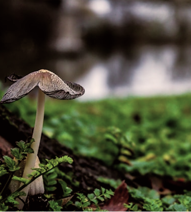
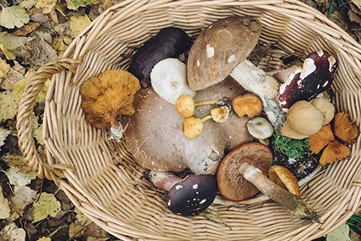
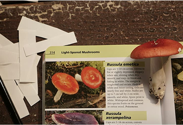
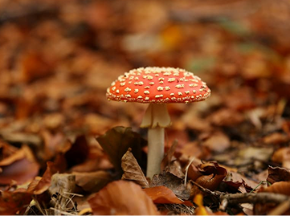
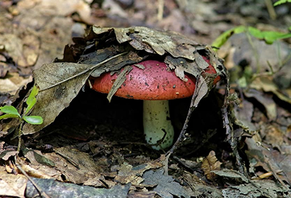

Discover a wide array of mushrooms from around the world, each with its own unique flavor profile and culinary uses.
Whether you're looking for earthy porcinis, delicate chanterelles, or meaty shiitakes, our selection has something for every palate.
Explore the diverse shapes, sizes, and colors of these fungi to elevate your dishes to new heights.

Where to look
Different species grow in different types of environments.
Forests are always a good starting place, though, with a wide range of species that grow in them.
If you’re after something specific, you can use our reference guide below to help you out.
Get to know your mushrooms
Chanterelle
edible
You can harvest this mushroom in the summer
Golden-yellow, funnel-shaped mushroom with false gills
Important notes:
Has toxic look-alikes - learn proper identification
Morel
toxic
You can harvest this mushroom in the spring
Distinctive honeycomb-like cap structure
Important notes:
Must be cooked before eating
Chicken of the Woods
edible
You can harvest this mushroom in the summer
Bright orange bracket fungus with yellow edges
Important notes:
Avoid if growing on certain tree species
Death Cap
toxic
You can harvest this mushroom in the summer
Pale green to white cap with white gills
Important notes:
Extremely toxic - study for safety awareness
Oyster Mushroom
edible
You can harvest this mushroom in the fall
Pale green to white cap with white gills
Important notes:
Great beginner mushroom, few look-alikes
Lion’s Mane
edible
You can harvest this mushroom in the fall
White, shaggy appearance like a lion's mane
Important notes:
No toxic look-alikes
Destroying Angel
toxic
You can harvest this mushroom in the summer
Pure white mushroom with a sack-like base
Important notes:
Deadly toxic - study for safety awareness
King Bolete
edible
You can harvest this mushroom in the summer
Large brown cap with thick stem
Important notes:
Learn to distinguish from similar species
Shaggy Mane
edible
You can harvest this mushroom in the fall
Tall white mushroom with shaggy scales
Important notes:
Must be harvested and eaten quickly
Maitake
edible
You can harvest this mushroom in the fall
Large, feathery clusters with overlapping gray-brown caps
Important notes:
Also known as Hen of the Woods - no toxic look-alikes
False Morel
toxic
You can harvest this mushroom in the spring
Brain-like, reddish-brown cap with irregular shape
Important notes:
Highly toxic - often confused with true morels
Matsutake
edible
You can harvest this mushroom in the fall
White to brown cap with thick stem and distinct spicy aroma
Important notes:
Verify identification - has toxic look-alikes
No matches for these filters
Frequently Asked Questions

What do I need to start mushroom foraging?
You'll need a local field guide, a sharp knife or scissors, a basket or mesh bag for collecting, and paper bags for separating specimens. Bring a small brush for cleaning, wear sturdy boots, and carry a GPS device or compass to track your location. A camera is also helpful to document your finds.

How can I identify edible mushrooms?
Learn from experienced foragers and reliable guidebooks – never rely on apps alone. Study each mushroom's specific features like cap shape, gill structure, stem characteristics, and spore prints. Start with easily identifiable species that have no poisonous lookalikes, and never eat anything unless you're completely certain of its identification.

What are the best seasons for mushroom foraging?
Spring is ideal for morels, late summer brings chanterelles and boletes, and fall is peak season for most mushrooms including oysters and hen of the woods. Some species can even be found in winter, especially in milder climates. Each season offers different varieties, so year-round foraging is possible.

Where can I find foraging spots?
Look in deciduous forests, especially near oak and maple trees, and in damp, shaded areas. Fallen logs and dead trees are often productive spots. Only forage on public lands where it's allowed, and always check local regulations. Remember to get permission for private property and keep your best locations private to prevent over-harvesting.